Objectives
- Install the Eclipse IDE on your workstation
- Create and run simple C application to test configuration
- Create a first OpenGL application
- Draw a square on a blank canvas
- Experiment with the Eclipse IDE
- Explore OpenGL documentation
Install Eclipse
-
Go to http://www.eclipse.org
-
In the downloads
-
Download and install
-
For OSX and Linux, Eclipse should automatically find the appropriate C/C++ compilers.
-
For windows, eclipse will require an C/C++ compiler to be installed. MinGW is a suitable package: http://www.mingw.org. In particular you should follow these instructions here:
-
http://www.mingw.org/wiki/Getting_Started
-
When you get to running the automated installer, use this command here to make sure you install both the compiler and debugger:
-
mingw-get install gcc gdb
Hello C++
Create a new C++ application, selecting the "Hello World" app from the //File->New->C++ Project// menu:
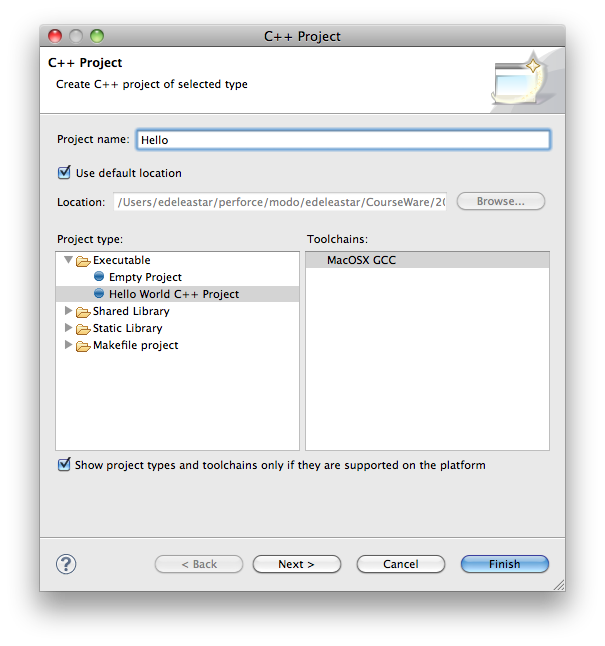
- This should create an empty project:
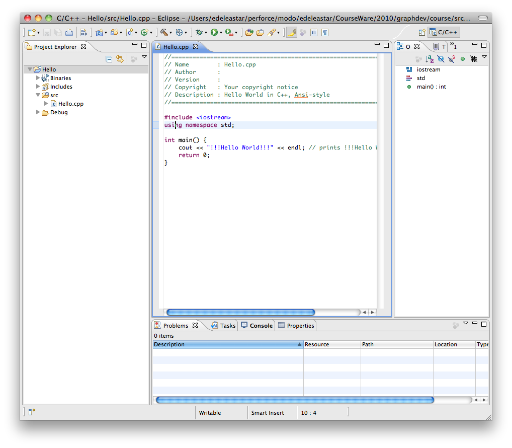
- For Mac, the C++ compiler provided with the system (GNU), should be automatically configured. So just pressing the Build tool (hammer icon) should compile the project:
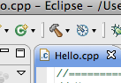
- Launch then by selecting Hello.cpp in project navigator, and selecting //Run As->Local C/C++ Application// from the context menu:
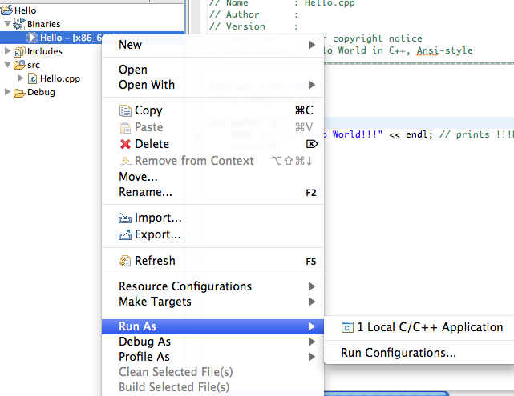
- Output will be visible in the console in eclipse:
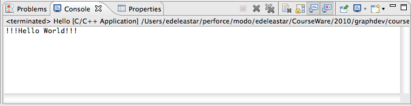
Subsequently, to run the application, just press one of the launch icons:
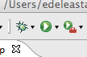
- For Windows, you may need to explicitly select the MinGW too chain. To this, edit the project properties, select //C++ Build->Tool Chain Editor// and make sure MinGW is selected:

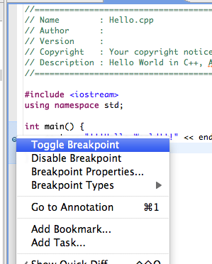
- When you then launch the application, use the debug launch tool:
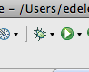
- Accept to swutch to debug perspective, and you can explore the debugger features as it has paused at the breakpoint:
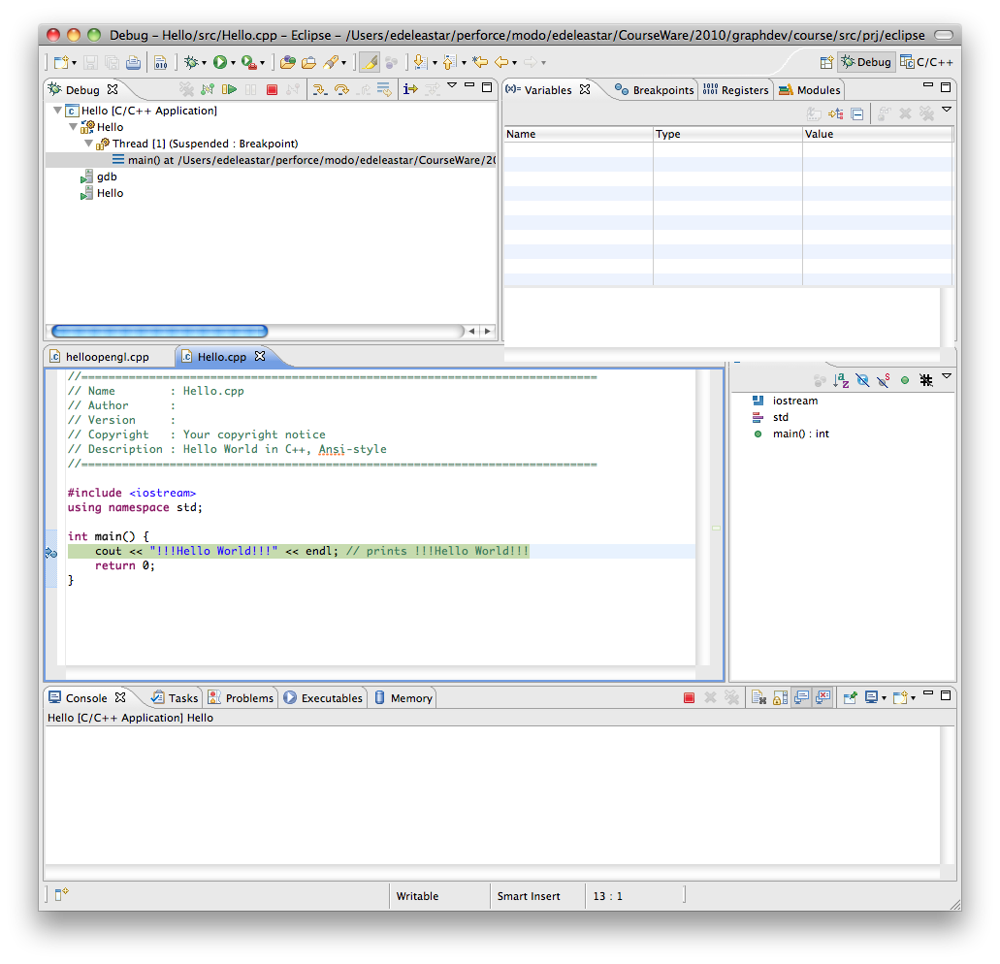
Hello OpenGL
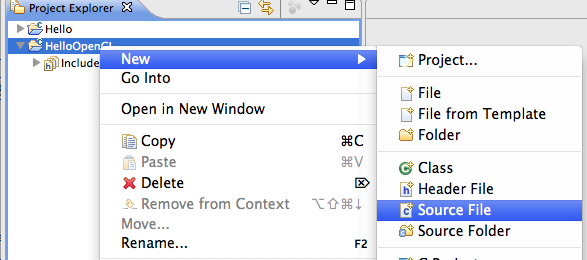
Eclipse will generate an empty source file:
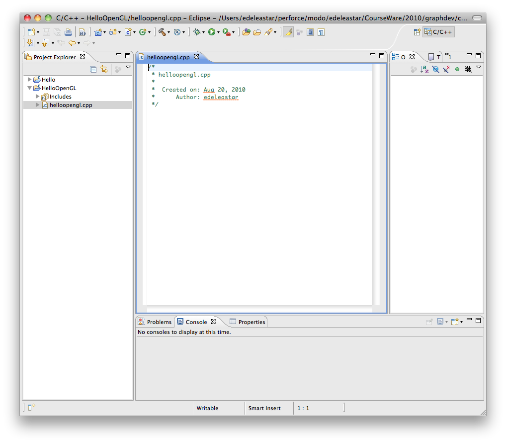
- We need to include the opengl headers. The locations of these headers on different systems varies, so we use directives to distinguish. This code fragment here will work for Mac and Windows:
#ifdef WIN32
#include <GL/gl.h>
#include <GL/glu.h>
#include "freeglut.h"
#endif
#ifdef __APPLE__
#include <OpenGL/gl.h>
#include <OpenGL/glu.h>
#include <Glut/glut.h>
#endif
void renderScene(void)
{
glClear( GL_COLOR_BUFFER_BIT);
glFlush();
}
void setupRC(void)
{
glClearColor(0.0f, 0.0f, 1.0f, 1.0f);
}
int main(int argc, char* argv[])
{
glutInit(&argc, argv);
glutInitDisplayMode(GLUT_SINGLE | GLUT_RGBA);
glutCreateWindow("Hello OpenGL");
glutDisplayFunc(renderScene);
setupRC();
glutMainLoop();
return 0;
}
-
Be Sure to save the file before proceeding.
-
Now attempt to build...
-
Libraries have not been configured, so on Windows you will get the following errors:
**** Internal Builder is used for build ****
g++ -O0 -g3 -Wall -c -fmessage-length=0 -ohelloopengl.o ..\helloopengl.cpp
..\helloopengl.cpp:4:22: freeglut.h: No such file or directory
..\helloopengl.cpp: In function `int main(int, char**)':
..\helloopengl.cpp:28: error: `glutInit' was not declared in this scope
..\helloopengl.cpp:29: error: `GLUT_SINGLE' was not declared in this scope
..\helloopengl.cpp:29: error: `GLUT_RGBA' was not declared in this scope
..\helloopengl.cpp:29: error: `glutInitDisplayMode' was not declared in this scope
..\helloopengl.cpp:30: error: `glutCreateWindow' was not declared in this scope
..\helloopengl.cpp:31: error: `glutDisplayFunc' was not declared in this scope
..\helloopengl.cpp:35: error: `glutMainLoop' was not declared in this scope
..\helloopengl.cpp:28: warning: unused variable 'glutInit'
..\helloopengl.cpp:29: warning: unused variable 'GLUT_SINGLE'
..\helloopengl.cpp:29: warning: unused variable 'GLUT_RGBA'
..\helloopengl.cpp:29: warning: unused variable 'glutInitDisplayMode'
..\helloopengl.cpp:30: warning: unused variable 'glutCreateWindow'
..\helloopengl.cpp:31: warning: unused variable 'glutDisplayFunc'
..\helloopengl.cpp:35: warning: unused variable 'glutMainLoop'
Build error occurred, build is stopped
- ... and on mac something similiar:
Invoking: GCC C++ Compiler
g++ -O0 -g3 -Wall -c -fmessage-length=0 -MMD -MP -MF"helloopengl.d" -MT"helloopengl.d" -o"helloopengl.o" "../helloopengl.cpp"
Finished building: ../helloopengl.cpp
Building target: HelloOpenGL
Invoking: MacOS X C++ Linker
g++ -o "HelloOpenGL" ./helloopengl.o
Undefined symbols:
"_glFlush", referenced from:
renderScene() in helloopengl.o
"_glutDisplayFunc", referenced from:
_main in helloopengl.o
"_glutInitDisplayMode", referenced from:
_main in helloopengl.o
"_glutCreateWindow", referenced from:
_main in helloopengl.o
"_glutMainLoop", referenced from:
_main in helloopengl.o
"_glutInit", referenced from:
_main in helloopengl.o
"_glClearColor", referenced from:
setupRC() in helloopengl.o
"_glClear", referenced from:
renderScene() in helloopengl.o
ld: symbol(s) not found
collect2: ld returned 1 exit status
make: *** [HelloOpenGL] Error 1
- As opengl is installed by default on Mac, we just need the appropriate flags to indicate the headders and libraries to link. Select the project in project explorer, from the context menu select //Properties// and then navigate to //C/C++ Build->MacOS X C++ Linker->Miscellaneous//
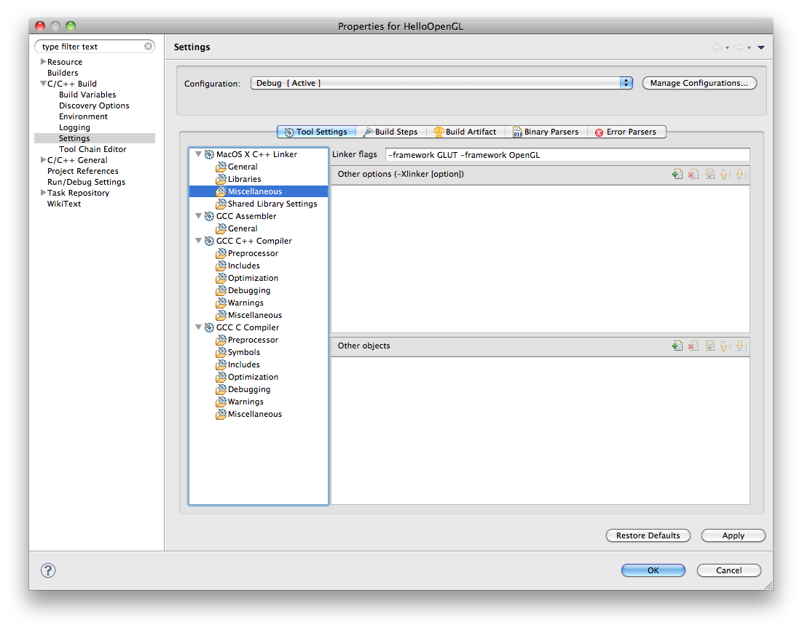
-
Enter "-framework GLUT -framework OpenGL" as shown, and press Apply and Ok.
-
Build and execute, and the following window should appear:
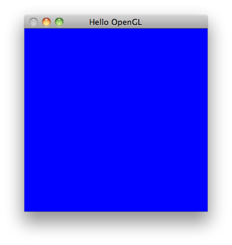
-
On windows, you will need to make sure that the platform SDK is installed. See
-
http://msdn.microsoft.com/en-us/windows/bb980924.aspx
-
The SDK includes OpenGL libraries, but not GLUT. A verion of GLUT is maintained here:
-
http://freeglut.sourceforge.net/
-
This is distributed as a large Visual Studio project. A prebult version, version, suitable for our purposes, is here:
-
freeglut.zip
-
Unzip this into a suitable directory, and copy the freeglut.dll into windows/system32.
-
In eclipse, add the freeglut directory to the path for the project:

- And then add the opengl32, glu32 and freeglut libraries to the linker:


Drawing a Square
- Edit the setupRC method to set a default projection model:
void setupRC(void)
{
glClearColor(0.0f, 0.0f, 1.0f, 1.0f);
gluOrtho2D(-100.0, 100.0, -100, 100.0);
}
- Now, in renderScene, we can draw a simple rectangle
void renderScene(void)
{
glClear( GL_COLOR_BUFFER_BIT);
glColor3f(1.0f, 0.0f, 0.0f);
glRectf(-25.0f, 25.0f, 25.0f, -25.0f);
glFlush();
}
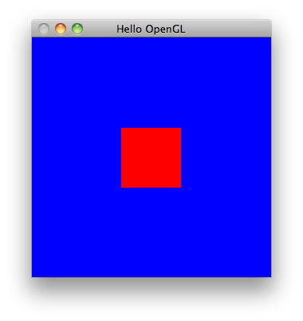
Exercises
1. Reconfigure the Project Structure
Review the two projects you have created, exploring them within eclipse:
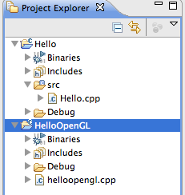
and on the file system:
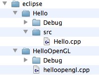
Refactor the opengl project such that the source is in a src subdirectory, like the c++ application. To do this, you will need to:
- Create a "source directory" called src in eclipse
-
Move the helloopengl.cpp file in there
-
clean the project, and also (perhaps) manualy delete the "debug" folder from within explorer/finder.
Your objective is to have a project structure like this:
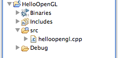
2. Introduce a utilities project
Create a new project to contain some utility classes. Call the project "utils".
It should initially contain a single leader file "libopengl.h". Put the includes from the existing open gl source into into it:
#ifdef WIN32
#include <windows.h>
#include <gl\glu.h>
#include "glut.h"
#endif
#ifdef __APPLE__
#include <OpenGL/gl.h>
#include <OpenGL/glu.h>
#include <Glut/glut.h>
#endif
Then replace these lines in your C++ programe with:
#include "libopengl.h"
There are many ways of doing this within eclipse. Most involve exiting the project properties, and exploring the project paths for the build. The following screen here gives the game away...
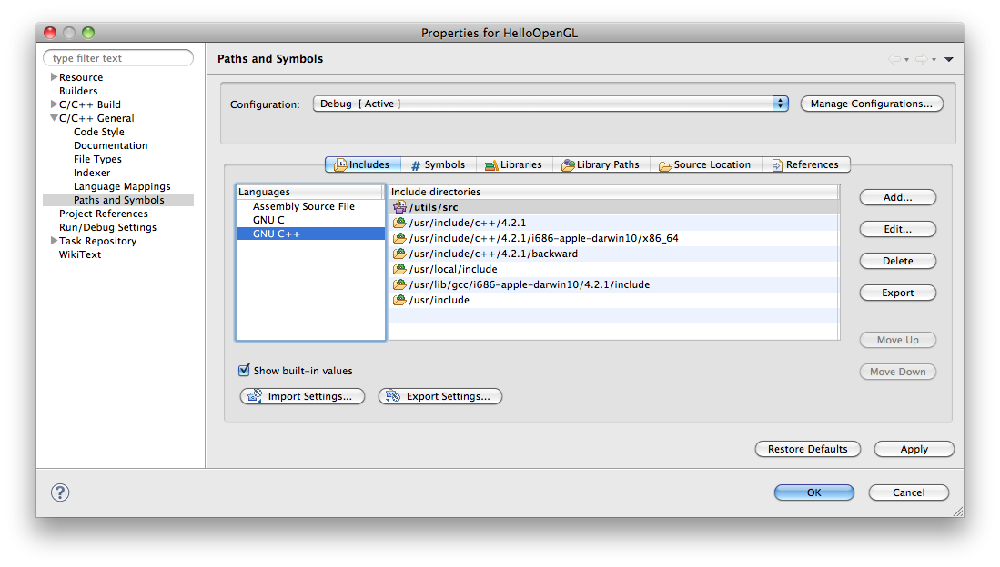
3. Explore the OpenGL API